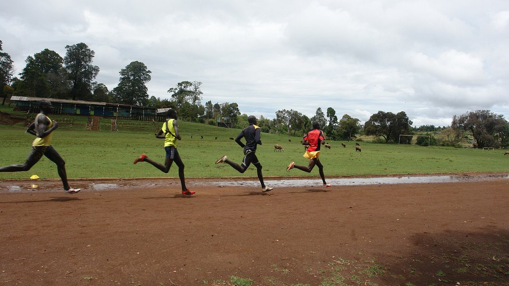

Race, Iten, Kenya

Behind
Best +0:01
371W
Target 418 W-47 W
- Cadence
- 87rpm
- Heart
- 140bpm
- Speed
- 26.5km/h
Recover4 of 14
1:24
Next: · 14:00 at level 19
-6.2%
57 m climbed
2.84 km
11
Resistance / 32
Solo races your best-time ghost: position reads Ahead or Behind, and solo alone gets a Pause button. Frozen at 6:36.